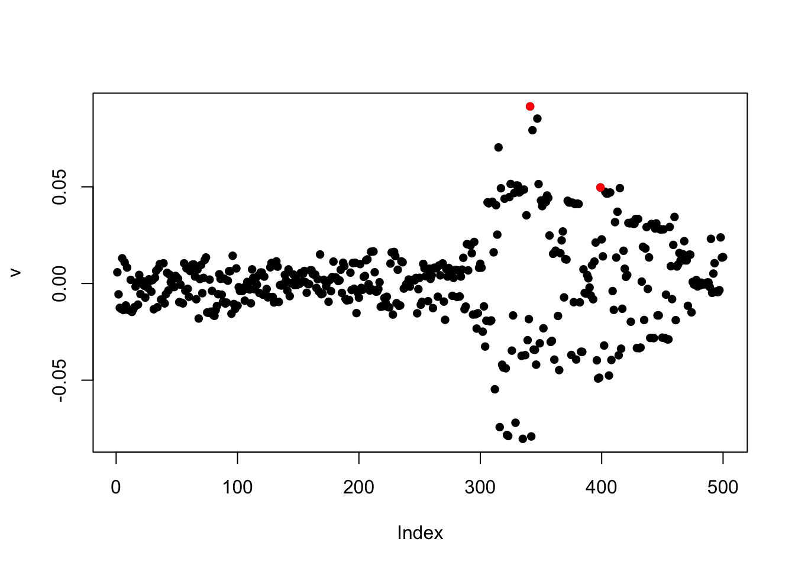
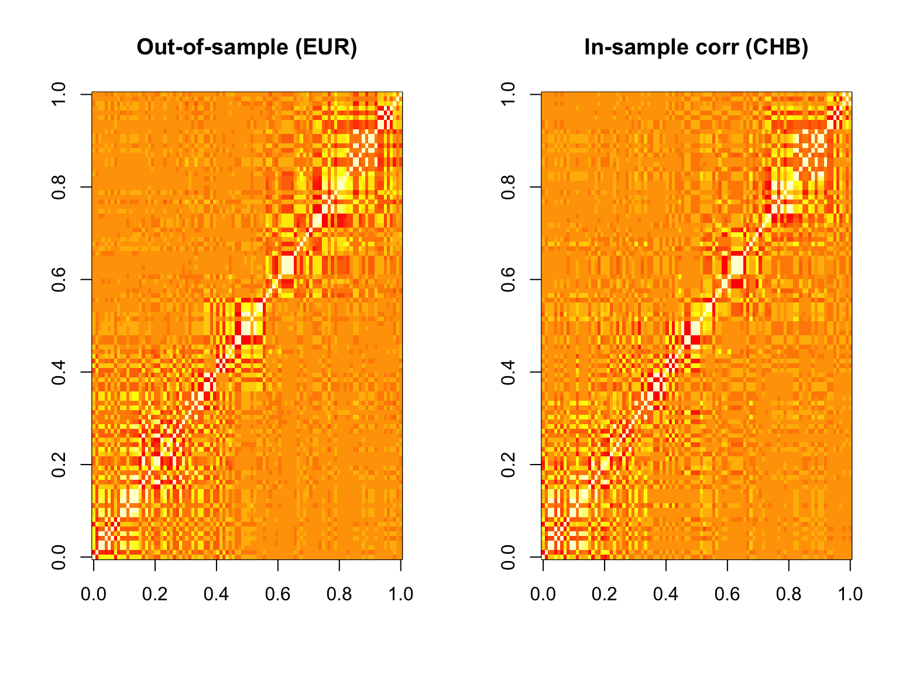
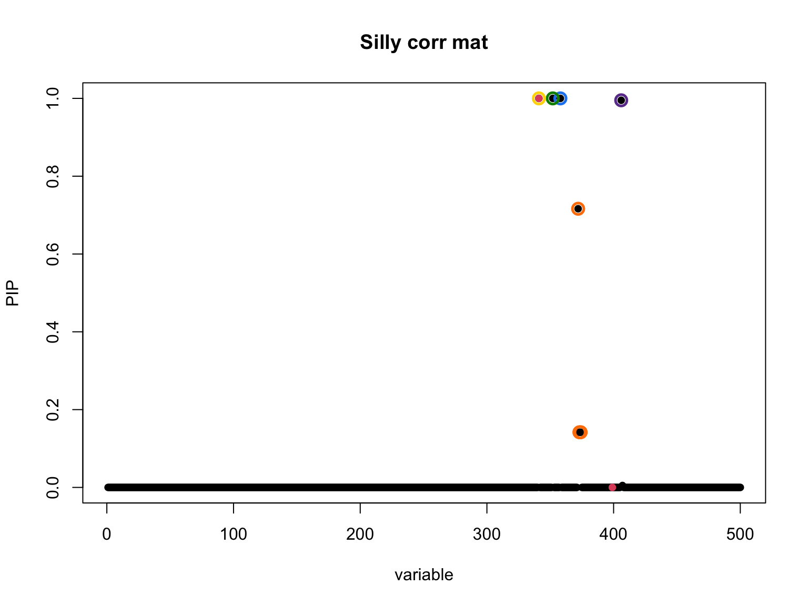
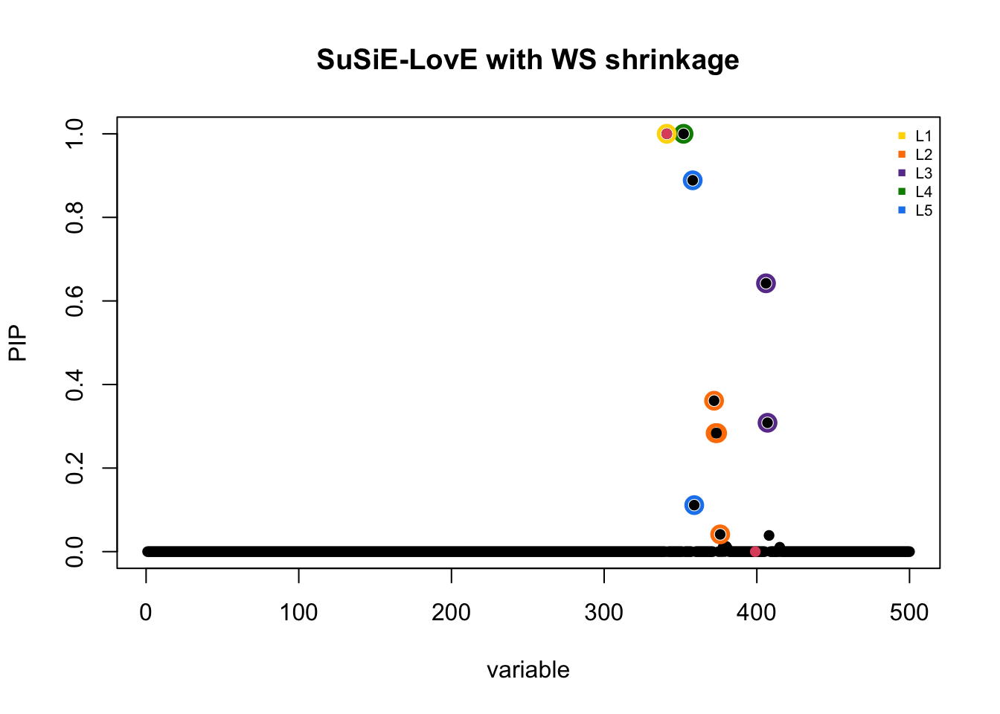
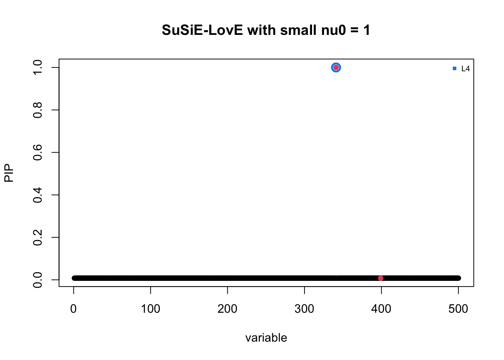

Silly R0 leads to very small nu0 and conservative estimate?
dodat-stats
2026-06-04
Last updated: 2026-06-05
Checks: 7 0
Knit directory: susie_love_experiments/
This reproducible R Markdown analysis was created with workflowr (version 1.7.2). The Checks tab describes the reproducibility checks that were applied when the results were created. The Past versions tab lists the development history.
Great! Since the R Markdown file has been committed to the Git repository, you know the exact version of the code that produced these results.
Great job! The global environment was empty. Objects defined in the global environment can affect the analysis in your R Markdown file in unknown ways. For reproduciblity it’s best to always run the code in an empty environment.
The command set.seed(20260419) was run prior to running
the code in the R Markdown file. Setting a seed ensures that any results
that rely on randomness, e.g. subsampling or permutations, are
reproducible.
Great job! Recording the operating system, R version, and package versions is critical for reproducibility.
Nice! There were no cached chunks for this analysis, so you can be confident that you successfully produced the results during this run.
Great job! Using relative paths to the files within your workflowr project makes it easier to run your code on other machines.
Great! You are using Git for version control. Tracking code development and connecting the code version to the results is critical for reproducibility.
The results in this page were generated with repository version 2449e63. See the Past versions tab to see a history of the changes made to the R Markdown and HTML files.
Note that you need to be careful to ensure that all relevant files for
the analysis have been committed to Git prior to generating the results
(you can use wflow_publish or
wflow_git_commit). workflowr only checks the R Markdown
file, but you know if there are other scripts or data files that it
depends on. Below is the status of the Git repository when the results
were generated:
Ignored files:
Ignored: .DS_Store
Ignored: .Rhistory
Ignored: .Rproj.user/
Untracked files:
Untracked: analysis/test.Rmd
Unstaged changes:
Modified: analysis/divergence_increase-nu_decrease.Rmd
Note that any generated files, e.g. HTML, png, CSS, etc., are not included in this status report because it is ok for generated content to have uncommitted changes.
These are the previous versions of the repository in which changes were
made to the R Markdown
(analysis/high-mismatch-tiny-nu0.Rmd) and HTML
(docs/high-mismatch-tiny-nu0.html) files. If you’ve
configured a remote Git repository (see ?wflow_git_remote),
click on the hyperlinks in the table below to view the files as they
were in that past version.
| File | Version | Author | Date | Message |
|---|---|---|---|---|
| Rmd | 2449e63 | dodat-stats | 2026-06-05 | Add new analyses |
1. Aim
We investigate to see if using a very mismatched R0 leads to small \(\nu_0\).
SPOIL: It actually does not lead to a small \(\nu_0\). Ironically, the regularization strength \(\lambda\) matters so much more than the discrepancy between \(v\) and out-of-sample \(R\) in deciding the optimal \(\nu_0\)… We have had automatic way to decide \(\lambda\), but it only depends on \(N_0\). Therefore in this case, where \(R0\) is way different than \(R\), but because \(N_0\) is the same, \(\lambda\) is the same and leads to quite large \(\nu_0\), which leads to more borrowing of information than we like, and leads to more false positive.
From a bright side, the current implementation is good when \(R_0\) is not too mismatched though (mismatch but not super far away from \(R\) (like divergence from a few hundred years apart), like in the previous workflow file).
Anyway, let’s see it in action. We generate R from Asian population and R0 from European population.
2. An example
2.1. Generate silly R0
sim_asn_eur <- function(chrom, start, end, n_gwas, n_ref, J, h2, seed) {
stdpopsim <- reticulate::import("stdpopsim")
msprime <- reticulate::import("msprime")
set.seed(seed)
# 1. Get Realistic Genetic Map from stdpopsim
species <- stdpopsim$get_species("HomSap")
contig <- species$get_contig(chrom, left = as.integer(start), right = as.integer(end))
# 2. Get OutOfAfrica_3G09 Demography (YRI, CEU, CHB)
demo_model <- species$get_demographic_model("OutOfAfrica_3G09")
demography <- demo_model$model
# 3. Run Simulation
ts <- msprime$sim_ancestry(
samples = reticulate::dict(CHB = as.integer(n_gwas), CEU = as.integer(n_ref)),
demography = demography,
recombination_rate = contig$recombination_map,
random_seed = as.integer(seed)
)
ts <- msprime$sim_mutations(ts, rate = 1.29e-8, random_seed = as.integer(seed))
# 4. Extract Genotypes
chb_id <- NULL
ceu_id <- NULL
for (p in reticulate::iterate(ts$populations())) {
if (!is.null(p$metadata) && p$metadata$name == "CHB") chb_id <- p$id
if (!is.null(p$metadata) && p$metadata$name == "CEU") ceu_id <- p$id
}
samples_gwas <- ts$samples(population = as.integer(chb_id))
samples_ref <- ts$samples(population = as.integer(ceu_id))
G_all <- ts$genotype_matrix()
to_diploid <- function(hap_idx) {
idx <- as.integer(hap_idx) + 1
g_hap <- G_all[, idx, drop = FALSE]
g_dip <- g_hap[, seq(1, ncol(g_hap), by = 2)] + g_hap[, seq(2, ncol(g_hap), by = 2)]
return(t(g_dip))
}
G_gwas <- to_diploid(samples_gwas)
G_ref <- to_diploid(samples_ref)
# 5. Filter for Common Variants (MAF > 5%)
maf_gwas <- colMeans(G_gwas) / 2
maf_ref <- colMeans(G_ref) / 2
common_mask <- (maf_gwas > 0.05) & (maf_gwas < 0.95) & (maf_ref > 0.05) & (maf_ref < 0.95)
n_common <- sum(common_mask)
if (n_common < J) stop(paste0("Only ", n_common, " common variants found but J = ", J, ". Try a larger region."))
G_gwas <- G_gwas[, common_mask, drop = FALSE]
G_ref <- G_ref[, common_mask, drop = FALSE]
J_all <- min(ncol(G_gwas), J)
max_start <- J_all - J
start_idx <- if (max_start > 0) sample(0:max_start, 1) else 0
cols_to_keep <- (start_idx + 1):(start_idx + J)
G <- G_gwas[, cols_to_keep, drop = FALSE]
G0 <- G_ref[, cols_to_keep, drop = FALSE]
# 6. Generate summary stats
X <- sweep(G, 2, colMeans(G), "-")
N <- nrow(X)
G0_centered <- sweep(G0, 2, colMeans(G0), "-")
R0 <- stats::cov(G0_centered)
R0[is.na(R0)] <- 0
R <- stats::cov(X)
R[is.na(R)] <- 0
num_causal <- 2
first_causal_SNP <- sample(1:J, 1)
second_causal_SNP <- which.min(R[first_causal_SNP, ]^2)
causal_SNPs_loc <- c(first_causal_SNP, second_causal_SNP)
beta_true <- rep(0, J)
beta_true[causal_SNPs_loc] <- stats::runif(num_causal) + 0.01
var_expl <- sum((X %*% beta_true)^2 / N)
scale <- h2 / var_expl
beta_true <- beta_true * sqrt(scale)
y <- (X %*% beta_true) + sqrt(1 - h2) * stats::rnorm(N)
y_std <- sqrt(sum((y - mean(y))^2) / N)
y <- (y - mean(y)) / y_std
v <- (t(X) %*% y) / N
return(list(
v = as.vector(v),
R = R,
R0 = R0,
beta_true = beta_true,
causal_SNPs_loc = causal_SNPs_loc
))
}
seed = 2
chrom <- "chr22"
start <- 20e6
end <- 21e6
N <- 25000L
N0 = 500L
J <- 500L
h2 <- 0.01
res <- sim_asn_eur(chrom, start, end,
n_gwas = N,
n_ref = N0,
J = J,
h2 = h2,
seed = seed)
v <- res$v
R <- res$R
R0 <- res$R0
beta_true <- res$beta_true
causal_SNPs_loc <- res$causal_SNPs_loc
## standardized
d = 1 / sqrt(diag(R))
v = d * v
R = cov2cor(R)
R0 = cov2cor(R0)
plot(v, pch = 16)
points(causal_SNPs_loc, v[causal_SNPs_loc], pch = 16, col = "red")
2.2 Visualize two correlation matrices
Sorry the color scheme is a bit hard to see but if we squeeze our eyes a bit then we can see that the two matrices are totally different.
par(mfrow = c(1, 2))
image(R0[1:100, 1:100], main = "Out-of-sample (EUR)", col = heat.colors(15))
image(R[1:100, 1:100], main = "In-sample corr (CHB)", col = heat.colors(15))
par(mfrow = c(1, 1))
2.3 Fit susie with in-sample R
fit_R <- susie_suff_stat(
XtX = N * R,
Xty = N * v,
n = N,
yty = N,
L = 5
)
susie_plot(fit_R, y = "PIP", b = beta_true, main = "In-sample cov mat")
2.4 Fit susie with silly R
fit_R_silly <- susie_suff_stat(
XtX = N * R0,
Xty = N * v,
n = N,
yty = N,
L = 5,
residual_variance = 1
)
susie_plot(fit_R_silly, y = "PIP", b = beta_true, main = "Silly corr mat")
Slightly regularizedR_tilde = (1 - 1 / N0) * R0 + 1 / N0 * diag(J)
fit_R0 <- susie_suff_stat(
XtX = N * R0,
Xty = N * v,
n = N,
yty = N,
L = 5
)
susie_plot(fit_R_silly, y = "PIP", b = beta_true, main = "Silly corr mat")
print(summary(fit_R0)$cs)
#> cs cs_log10bf cs_avg_r2 cs_min_r2 variable
#> 1 1 158.53519 1.0000000 1.0000000 341
#> 2 3 58.96533 1.0000000 1.0000000 406
#> 3 4 2874.95762 1.0000000 1.0000000 352
#> 4 5 2953.34492 1.0000000 1.0000000 358
#> 5 2 79.08453 0.9949025 0.9923586 372,373,3742.5 Fit susielove with silly R
R_out <- compute_wen_stephens(R_0 = R_tilde, N_ref = N0)
# R_out = diag(J)
# R_out = R_tilde
k <- min(N0, J)
diag_R = diag(R)
love_res_WS <- susie_love_lambda(v, R_out, diag_R,
lambda = 0,
N, L = 5,
k,
nu_delta_init = 500,
step_susie = 20,
step_R = 30,
step_nu = 10,
max_iter = 30,
tol = 1e-4)
#> Iter 1 | Loss: -0.6490 | nu_q: 574.6 | nu_delta: 571.0
#> Iter 2 | Loss: -0.8621 | nu_q: 554.8 | nu_delta: 549.5
#> Iter 3 | Loss: -0.9281 | nu_q: 518.3 | nu_delta: 512.3
#> Iter 4 | Loss: -0.9647 | nu_q: 495.3 | nu_delta: 488.9
#> Iter 5 | Loss: -0.9836 | nu_q: 479.3 | nu_delta: 472.5
#> Iter 6 | Loss: -0.9942 | nu_q: 470.0 | nu_delta: 462.9
#> Iter 7 | Loss: -1.0014 | nu_q: 460.5 | nu_delta: 453.2
#> Iter 8 | Loss: -1.0060 | nu_q: 455.7 | nu_delta: 448.1
#> Iter 9 | Loss: -1.0089 | nu_q: 451.4 | nu_delta: 443.7
#> Iter 10 | Loss: -1.0111 | nu_q: 448.5 | nu_delta: 440.5
#> Iter 11 | Loss: -1.0126 | nu_q: 446.5 | nu_delta: 438.4
#> Iter 12 | Loss: -1.0138 | nu_q: 444.7 | nu_delta: 436.5
#> Iter 13 | Loss: -1.0147 | nu_q: 443.6 | nu_delta: 435.1
#> Iter 14 | Loss: -1.0154 | nu_q: 442.6 | nu_delta: 434.1
#> Iter 15 | Loss: -1.0160 | nu_q: 441.7 | nu_delta: 433.1
#> Iter 16 | Loss: -1.0165 | nu_q: 441.4 | nu_delta: 432.7
#> Iter 17 | Loss: -1.0168 | nu_q: 441.0 | nu_delta: 432.3
#> Iter 18 | Loss: -1.0171 | nu_q: 440.5 | nu_delta: 431.6
#> Iter 19 | Loss: -1.0173 | nu_q: 440.0 | nu_delta: 431.1
#> Iter 20 | Loss: -1.0173 | nu_q: 440.0 | nu_delta: 431.1
#> Converged at iteration 20
b_res <- love_res_WS$b_res
R_q <- love_res_WS$R_q
susie_plot_alpha(
alpha = b_res$alpha,
R = cov2cor(R_q),
b = beta_true,
main = paste0("SuSiE-LovE with WS shrinkage")
)
Let’s try again with fixed and small \(\nu_0\): It indeed leads to conservative behavior. But how to produce this small \(\nu_0\)???nu_q = 10
nu_0 = 1
lambda = 1 / N0
susie_love_small_nu <- susie_love_fix_2params(v, R_out, diag_R,
lambda, nu_q, nu_0,
N, L = 5,
k,
z_init = NULL,
step_susie = 20,
step_R = 30,
step_nu = 30,
max_iter = 100,
max_iter_init = 100,
tol = 1e-4)
#> Iter 1 | Loss: 87.8778 | nu_q: 11.9 | nu_0: 1.0
#> Iter 2 | Loss: 60.7674 | nu_q: 12.1 | nu_0: 1.0
#> Iter 3 | Loss: 53.5698 | nu_q: 11.8 | nu_0: 1.0
#> Iter 4 | Loss: 47.5547 | nu_q: 11.4 | nu_0: 1.0
#> Iter 5 | Loss: 44.3025 | nu_q: 11.3 | nu_0: 1.0
#> Iter 6 | Loss: 42.2585 | nu_q: 11.0 | nu_0: 1.0
#> Iter 7 | Loss: 40.5368 | nu_q: 10.9 | nu_0: 1.0
#> Iter 8 | Loss: 39.4614 | nu_q: 10.6 | nu_0: 1.0
#> Iter 9 | Loss: 38.4577 | nu_q: 10.6 | nu_0: 1.0
#> Iter 10 | Loss: 37.7062 | nu_q: 10.3 | nu_0: 1.0
#> Iter 11 | Loss: 37.1495 | nu_q: 10.3 | nu_0: 1.0
#> Iter 12 | Loss: 36.6510 | nu_q: 10.1 | nu_0: 1.0
#> Iter 13 | Loss: 36.1987 | nu_q: 10.0 | nu_0: 1.0
#> Iter 14 | Loss: 35.7317 | nu_q: 9.8 | nu_0: 1.0
#> Iter 15 | Loss: 35.2837 | nu_q: 9.7 | nu_0: 1.0
#> Iter 16 | Loss: 34.9332 | nu_q: 9.6 | nu_0: 1.0
#> Iter 17 | Loss: 34.6317 | nu_q: 9.5 | nu_0: 1.0
#> Iter 18 | Loss: 34.3636 | nu_q: 9.3 | nu_0: 1.0
#> Iter 19 | Loss: 34.1391 | nu_q: 9.3 | nu_0: 1.0
#> Iter 20 | Loss: 33.9409 | nu_q: 9.1 | nu_0: 1.0
#> Iter 21 | Loss: 33.7723 | nu_q: 9.1 | nu_0: 1.0
#> Iter 22 | Loss: 33.6015 | nu_q: 9.0 | nu_0: 1.0
#> Iter 23 | Loss: 33.4025 | nu_q: 8.9 | nu_0: 1.0
#> Iter 24 | Loss: 33.2365 | nu_q: 8.8 | nu_0: 1.0
#> Iter 25 | Loss: 33.0901 | nu_q: 8.8 | nu_0: 1.0
#> Iter 26 | Loss: 32.9636 | nu_q: 8.7 | nu_0: 1.0
#> Iter 27 | Loss: 32.8316 | nu_q: 8.6 | nu_0: 1.0
#> Iter 28 | Loss: 32.7102 | nu_q: 8.6 | nu_0: 1.0
#> Iter 29 | Loss: 32.5853 | nu_q: 8.6 | nu_0: 1.0
#> Iter 30 | Loss: 32.4693 | nu_q: 8.5 | nu_0: 1.0
#> Iter 31 | Loss: 32.3580 | nu_q: 8.5 | nu_0: 1.0
#> Iter 32 | Loss: 32.2321 | nu_q: 8.5 | nu_0: 1.0
#> Iter 33 | Loss: 32.1206 | nu_q: 8.5 | nu_0: 1.0
#> Iter 34 | Loss: 32.0027 | nu_q: 8.4 | nu_0: 1.0
#> Iter 35 | Loss: 31.9107 | nu_q: 8.4 | nu_0: 1.0
#> Iter 36 | Loss: 31.8219 | nu_q: 8.4 | nu_0: 1.0
#> Iter 37 | Loss: 31.7295 | nu_q: 8.4 | nu_0: 1.0
#> Iter 38 | Loss: 31.6428 | nu_q: 8.3 | nu_0: 1.0
#> Iter 39 | Loss: 31.5674 | nu_q: 8.3 | nu_0: 1.0
#> Iter 40 | Loss: 31.4836 | nu_q: 8.3 | nu_0: 1.0
#> Iter 41 | Loss: 31.3954 | nu_q: 8.3 | nu_0: 1.0
#> Iter 42 | Loss: 31.2891 | nu_q: 8.3 | nu_0: 1.0
#> Iter 43 | Loss: 31.1921 | nu_q: 8.3 | nu_0: 1.0
#> Iter 44 | Loss: 31.1056 | nu_q: 8.3 | nu_0: 1.0
#> Iter 45 | Loss: 31.0004 | nu_q: 8.3 | nu_0: 1.0
#> Iter 46 | Loss: 30.9300 | nu_q: 8.3 | nu_0: 1.0
#> Iter 47 | Loss: 30.8610 | nu_q: 8.3 | nu_0: 1.0
#> Iter 48 | Loss: 30.7903 | nu_q: 8.3 | nu_0: 1.0
#> Iter 49 | Loss: 30.7188 | nu_q: 8.3 | nu_0: 1.0
#> Iter 50 | Loss: 30.6472 | nu_q: 8.3 | nu_0: 1.0
#> Iter 51 | Loss: 30.5683 | nu_q: 8.3 | nu_0: 1.0
#> Iter 52 | Loss: 30.4726 | nu_q: 8.3 | nu_0: 1.0
#> Iter 53 | Loss: 30.3752 | nu_q: 8.3 | nu_0: 1.0
#> Iter 54 | Loss: 30.2609 | nu_q: 8.4 | nu_0: 1.0
#> Iter 55 | Loss: 30.1616 | nu_q: 8.4 | nu_0: 1.0
#> Iter 56 | Loss: 30.1040 | nu_q: 8.4 | nu_0: 1.0
#> Iter 57 | Loss: 30.0361 | nu_q: 8.4 | nu_0: 1.0
#> Iter 58 | Loss: 29.9387 | nu_q: 8.4 | nu_0: 1.0
#> Iter 59 | Loss: 29.8549 | nu_q: 8.4 | nu_0: 1.0
#> Iter 60 | Loss: 29.8071 | nu_q: 8.4 | nu_0: 1.0
#> Iter 61 | Loss: 29.7475 | nu_q: 8.4 | nu_0: 1.0
#> Iter 62 | Loss: 29.6881 | nu_q: 8.4 | nu_0: 1.0
#> Iter 63 | Loss: 29.6324 | nu_q: 8.5 | nu_0: 1.0
#> Iter 64 | Loss: 29.5757 | nu_q: 8.5 | nu_0: 1.0
#> Iter 65 | Loss: 29.5077 | nu_q: 8.5 | nu_0: 1.0
#> Iter 66 | Loss: 29.4286 | nu_q: 8.5 | nu_0: 1.0
#> Iter 67 | Loss: 29.3676 | nu_q: 8.5 | nu_0: 1.0
#> Iter 68 | Loss: 29.3062 | nu_q: 8.5 | nu_0: 1.0
#> Iter 69 | Loss: 29.2497 | nu_q: 8.5 | nu_0: 1.0
#> Iter 70 | Loss: 29.1780 | nu_q: 8.6 | nu_0: 1.0
#> Iter 71 | Loss: 29.1184 | nu_q: 8.6 | nu_0: 1.0
#> Iter 72 | Loss: 29.0731 | nu_q: 8.6 | nu_0: 1.0
#> Iter 73 | Loss: 29.0244 | nu_q: 8.6 | nu_0: 1.0
#> Iter 74 | Loss: 28.9785 | nu_q: 8.6 | nu_0: 1.0
#> Iter 75 | Loss: 28.9352 | nu_q: 8.6 | nu_0: 1.0
#> Iter 76 | Loss: 28.8511 | nu_q: 8.7 | nu_0: 1.0
#> Iter 77 | Loss: 28.7840 | nu_q: 8.7 | nu_0: 1.0
#> Iter 78 | Loss: 28.7319 | nu_q: 8.7 | nu_0: 1.0
#> Iter 79 | Loss: 28.6774 | nu_q: 8.7 | nu_0: 1.0
#> Iter 80 | Loss: 28.6296 | nu_q: 8.7 | nu_0: 1.0
#> Iter 81 | Loss: 28.5849 | nu_q: 8.7 | nu_0: 1.0
#> Iter 82 | Loss: 28.5439 | nu_q: 8.7 | nu_0: 1.0
#> Iter 83 | Loss: 28.5024 | nu_q: 8.8 | nu_0: 1.0
#> Iter 84 | Loss: 28.4616 | nu_q: 8.8 | nu_0: 1.0
#> Iter 85 | Loss: 28.4214 | nu_q: 8.8 | nu_0: 1.0
#> Iter 86 | Loss: 28.2900 | nu_q: 8.8 | nu_0: 1.0
#> Iter 87 | Loss: 28.1835 | nu_q: 8.8 | nu_0: 1.0
#> Iter 88 | Loss: 28.0983 | nu_q: 8.9 | nu_0: 1.0
#> Iter 89 | Loss: 28.0319 | nu_q: 8.9 | nu_0: 1.0
#> Iter 90 | Loss: 27.9752 | nu_q: 8.9 | nu_0: 1.0
#> Iter 91 | Loss: 27.9083 | nu_q: 8.9 | nu_0: 1.0
#> Iter 92 | Loss: 27.8608 | nu_q: 9.0 | nu_0: 1.0
#> Iter 93 | Loss: 27.7930 | nu_q: 9.0 | nu_0: 1.0
#> Iter 94 | Loss: 27.7367 | nu_q: 9.0 | nu_0: 1.0
#> Iter 95 | Loss: 27.6843 | nu_q: 9.1 | nu_0: 1.0
#> Iter 96 | Loss: 27.6350 | nu_q: 9.1 | nu_0: 1.0
#> Iter 97 | Loss: 27.5938 | nu_q: 9.1 | nu_0: 1.0
#> Iter 98 | Loss: 27.5373 | nu_q: 9.2 | nu_0: 1.0
#> Iter 99 | Loss: 27.4757 | nu_q: 9.2 | nu_0: 1.0
#> Iter 100 | Loss: 27.4226 | nu_q: 9.2 | nu_0: 1.0
b_res <- susie_love_small_nu$b_res
R_q <- susie_love_small_nu$R_q
susie_plot_alpha(
alpha = b_res$alpha,
R = cov2cor(R_q),
b = beta_true,
main = paste0("SuSiE-LovE with small nu0 = ", nu_0)
)
sessionInfo()
#> R version 4.5.2 (2025-10-31)
#> Platform: aarch64-apple-darwin20
#> Running under: macOS Tahoe 26.5
#>
#> Matrix products: default
#> BLAS: /System/Library/Frameworks/Accelerate.framework/Versions/A/Frameworks/vecLib.framework/Versions/A/libBLAS.dylib
#> LAPACK: /Library/Frameworks/R.framework/Versions/4.5-arm64/Resources/lib/libRlapack.dylib; LAPACK version 3.12.1
#>
#> locale:
#> [1] en_US.UTF-8/en_US.UTF-8/en_US.UTF-8/C/en_US.UTF-8/en_US.UTF-8
#>
#> time zone: America/New_York
#> tzcode source: internal
#>
#> attached base packages:
#> [1] stats graphics grDevices utils datasets methods base
#>
#> other attached packages:
#> [1] susieR_0.14.2 susielove_0.1.0 workflowr_1.7.2
#>
#> loaded via a namespace (and not attached):
#> [1] sass_0.4.10 generics_0.1.4 stringi_1.8.7 lattice_0.22-7
#> [5] digest_0.6.39 magrittr_2.0.4 evaluate_1.0.5 grid_4.5.2
#> [9] RColorBrewer_1.1-3 fastmap_1.2.0 plyr_1.8.9 rprojroot_2.1.1
#> [13] jsonlite_2.0.0 Matrix_1.7-4 processx_3.8.6 whisker_0.4.1
#> [17] reshape_0.8.10 mixsqp_0.3-54 ps_1.9.1 promises_1.5.0
#> [21] httr_1.4.8 scales_1.4.0 jquerylib_0.1.4 cli_3.6.6
#> [25] rlang_1.2.0 crayon_1.5.3 withr_3.0.2 cachem_1.1.0
#> [29] yaml_2.3.12 otel_0.2.0 tools_4.5.2 dplyr_1.2.0
#> [33] ggplot2_4.0.2 httpuv_1.6.17 reticulate_1.46.0 png_0.1-9
#> [37] vctrs_0.7.1 R6_2.6.1 matrixStats_1.5.0 lifecycle_1.0.5
#> [41] git2r_0.36.2 stringr_1.6.0 fs_2.1.0 irlba_2.3.7
#> [45] pkgconfig_2.0.3 callr_3.7.6 pillar_1.11.1 bslib_0.10.0
#> [49] later_1.4.8 gtable_0.3.6 glue_1.8.0 Rcpp_1.1.1
#> [53] xfun_0.56 tibble_3.3.1 tidyselect_1.2.1 rstudioapi_0.18.0
#> [57] knitr_1.51 farver_2.1.2 htmltools_0.5.9 rmarkdown_2.30
#> [61] compiler_4.5.2 getPass_0.2-4 S7_0.2.1